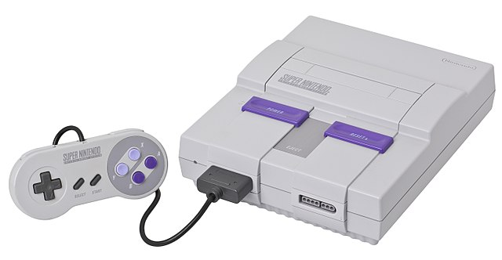

Super Nintendo Entertainment System

The Super Nintendo Entertainment System was introduced November 21, 1990. The SNES is Nintendo's second programmable home console, following the Nintendo Entertainment System (NES). The console introduced advanced graphics and sound capabilities compared with other systems at the time. It was designed to accommodate the ongoing development of a variety of enhancement chips integrated into game cartridges to be competitive into the next generation.
The Super Nintendo Entertainment System was introduced November 21, 1990. The SNES is Nintendo's second programmable home console, following the Nintendo Entertainment System (NES). The console introduced advanced graphics and sound capabilities compared with other systems at the time. It was designed to accommodate the ongoing development of a variety of enhancement chips integrated into game cartridges to be competitive into the next generation.